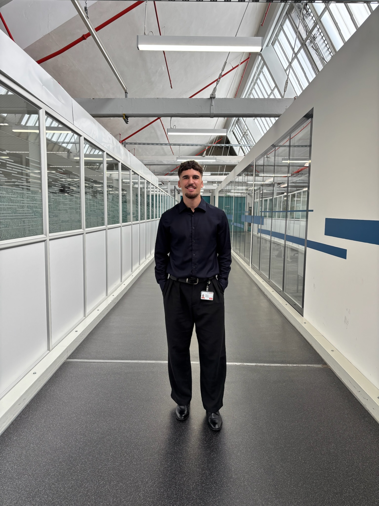

ETH Zürich · Carnegie Mellon · EPFL
Jonathan Fouquet
Reinforcement Learning, Optimal Control & Legged Locomotion
I am an M.Sc. student in Robotics, Systems and Control at ETH Zürich, motivated by one central challenge: teaching legged and humanoid robots how to move with agility, balance, and whole-body coordination in the physical world.
My research focuses on the seam between reinforcement learning (PPO, reward design, sim-to-real transfer) and model-based optimal control (MPC, LQR, receding-horizon planning). I am convinced that robust physical autonomy emerges when we combine the adaptive power of learned policies with the mathematical stability guarantees of dynamic models.
At ETH Zürich, I conduct coursework advised within the Robotic Systems Lab (RSL / Prof. Marco Hutter) and lead control and teleoperation development for humanoid robotics at the ETH Robotics Club.
◰ Zürich, Switzerland · French (Native) · English (C1) · German

01 / Research Focus
What I want to solve in robotics.
Building embodied AI systems that do not merely memorize simulation, but adapt gracefully to unpredictable terrain and physical contact.
RL for Legged Locomotion
Training robust whole-body motor skills in physics simulators (MuJoCo, Isaac Lab) for quadrupeds and humanoids. Designing curriculum learning, reward shaping, and domain randomization so policies survive the jump to real hardware.
Model-Based Control & MPC
Using Model Predictive Control, LQR, and Dynamic Programming as stabilizing backbones. Combining optimization-based trajectory planning with learned policies to preserve hard constraints and safety bounds.
Human–Robot Interaction & Teleoperation
Closing the control loop back to the human operator: mapping VR headset and hand-tracking input to whole-body humanoid motion, and managing low-latency bilateral feedback under delayed packet transmission.
02 / Selected Projects
Current work & robotic implementations.
Hands-on systems spanning humanoid whole-body control, VR teleoperation, and classical feedback control loops.
Robot Apprentice — learn from the expert, teach the novice
AI flight-inspection copilot · Learning from demonstration + Guardian MPC
An AI “apprentice” that learns inspection-flight rules by watching an expert, explains each rule back to confirm it understood, then coaches a novice using the expert’s own words. A Guardian MPC predicts about two seconds ahead and brakes to keep the aircraft inside the expert’s safety envelope. Built end-to-end in a 24-hour hackathon.
ETHRC Humanoid — Whole-Body Control
Core Contributor · ROS 2 / MuJoCo / C++
Developing the whole-body control and teleoperation stack for the club’s full-size humanoid platform.
- Tracing commands from VR operator headsets through the high-level controller down to joint-level actuation.
- Implementing latency-compensation and stability routines in MuJoCo simulations under delayed packet transmission.
- Developing modular ROS 2 packages adhering to modern colcon build and real-time execution standards.
Autonomous Mobile Robots Stack
Autonomy & Control Projects · General Robotics (ROB 16281)
Engineered autonomous ground platforms covering state estimation, path planning, and trajectory tracking.
- Implemented low-level PID/LQR velocity and heading controllers with wheel odometry and IMU sensor fusion.
- Designed computer vision pipelines on embedded hardware (Raspberry Pi) for feature extraction and obstacle detection.
- Earned Grade A (4.0 / 4.0) across all robotics and control coursework at CMU.
Inverted Pendulum Optimal Control
Nonlinear Modeling & Kalman Filter Design
Modeled the nonlinear cart-pole dynamics and evaluated frequency-domain vs. state-space control methods.
- Conducted root-locus and Bode analysis to define stability margins and pole-placement objectives.
- Formulated continuous and discrete Linear Quadratic Regulators (LQR) to maximize disturbance rejection.
- Implemented a Kalman Filter to reconstruct states from noisy sensor streams in MATLAB/Simulink.
03 / Academic Background
Relevant training across robotics, control, and quantitative analysis.
I have built my foundation across ETH Zürich, Carnegie Mellon, and EPFL, with a focus on dynamics, optimization, control, and autonomy rather than broad general coursework.
ETH Zürich
M.Sc. Robotics, Systems and Control · RSL (Prof. Marco Hutter)
| Current course · Autumn 2026 | Area | ECTS |
|---|---|---|
| Robot Dynamics | Dynamics | 4 |
| Model Predictive Control | Control | 4 |
| Dynamic Programming & Optimal Control | Control | 4 |
| Probabilistic Artificial Intelligence | AI / ML | 8 |
| Planning & Decision Making for Robots | Autonomy | 4 |
| Image Analysis & Computer Vision | Perception | 6 |
Carnegie Mellon University
Exchange Year · Mechanical Engineering & Robotics
| Course | Area | Grade |
|---|---|---|
| General Robotics | Autonomy | A |
| Feedback Control Systems | Control | A |
| Probability Modeling | Statistics | A |
EPFL
B.Sc. Mechanical Engineering
| Course | Type | Grade |
|---|---|---|
| Numerical Analysis | Mathematics | 6.00 |
| Dynamical Systems | Dynamics | 5.75 |
| Probability & Statistics | Statistics | 5.75 |
| Linear Algebra | Mathematics | 5.75 |
| Programming for Engineers | Programming | 5.75 |
| Information, Computation & Comm. | Computer Science | 5.50 |
04 / Experience
Work & engineering history.
Industry internships, software development, and academic coaching.
Bosch — Special Machinery Construction
2026 · Stuttgart, GermanyEngineering & AI Intern
Engineered a proof-of-concept Retrieval-Augmented Generation (RAG) platform to support the SAP S/4HANA enterprise migration (Python, LangChain, ChromaDB, FastAPI). On the physical equipment side, designed custom special-machinery components and technical drawings in Autodesk Inventor with rapid 3D print prototyping.
Virtual Traffic Lights
2025 – 2026 · Pittsburgh, USASoftware Developer
Built backend FastAPI data pipelines parsing real-time vehicle telemetry and turn counts for an intelligent traffic monitoring platform. Created frontend visualization components in React / TypeScript and containerized deployments with Docker.
EPFL (École Polytechnique Fédérale de Lausanne)
2024 – 2025 · Lausanne, SwitzerlandTeaching Assistant · Mechanical Engineering
TA for C programming (Information, Computation & Communication) and Electrical Science laboratories. Guided undergraduate students through algorithmic debugging, supervised laboratory experiments, and graded examinations.
05 / Toolkit
Technical stack.
Tools and frameworks I leverage across physical simulation, control theory, and hardware.
Methods & Theory
- Reinforcement Learning (PPO)
- Model Predictive Control (MPC)
- Optimal Control & LQR
- Kalman State Estimation
- Rigid-Body Dynamics
- Probabilistic AI / Bayesian
Robotics & Sim
- ROS 2 (Humble / colcon)
- MuJoCo
- Isaac Lab / Isaac Sim
- Gazebo
- URDF / MJCF Modeling
- Raspberry Pi · Arduino
Programming
- Python (PyTorch, NumPy)
- C / C++
- MATLAB & Simulink
- TypeScript / React
- Bash / Shell scripting
Hardware & Tools
- Autodesk Inventor
- Fusion 360 · CATIA
- Git · GitHub Actions CI
- Docker · Linux
- Rapid Prototyping / 3D Print
06 / Contact
Let's build intelligent robots.
I am currently open to part-time working-student positions (20–40%) and robotics research internships in Zürich. If you are developing locomotion policies, whole-body controllers, or physical AI systems, let's connect.
jfouquet@ethz.ch